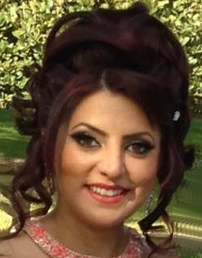

Arpineh Ratevosiyan
Resume
610 Palm Dr., GLENDALE, CA 91202 Cell: (818) 929-9931 Email: arpinehra@yahoo.com https://drive.google.com/drive/my-drive
OBJECTIVE: Seeking to obtain a challenging video editing position that will allow expanding upon my education and continuing to accumulate knowledge and contribute to an organization’s success.
EDUCATION The Art Institutes of Hollywood July/2015-Present BA of: Digital Filmmaking and Video Production
SUMMARY OF QUALIFICATIONS Tri-lingual: Armenian, Farsi, English Camera Operation: Canon 7D, HMC 150, Camera Techniques Production: Boom Operation, Grip, Screenwriting. Software: Premiere Pro, Final Cut Pro, Adobe After effects, Adobe Photoshop, Adobe Illustrator, Final Draft, Microsoft Office. Basic knowledge of HTML and CSS. Drawing landscapes, portraits and abstract pieces of work. Drawing pictures that are able to be used in books, magazines and websites. EXPERIENCE CBO Video Editing Assistant Wedding Video Editor 10/21/16-Present Initial States Pictures,Los Angeles, California 08/22/16- 09/29/16 Intern: Editor (Short Film) The Present Past/Directed by Walter Schulz The Art Institute of California – Hollywood 07/01/16-Present Worked on a collection of five student short films in the capacity of a production assistant, boom operator, Director, Script writer, Editor and grip. Post Production Experience Experience; with editing Drama, Comedy, Documentary, Action, Sports and commercial Films. Other experience Burbank Montessori Children’s Academy-Burbank, CA 2012-Present Preschool Teacher (Child Development Associate Credential)